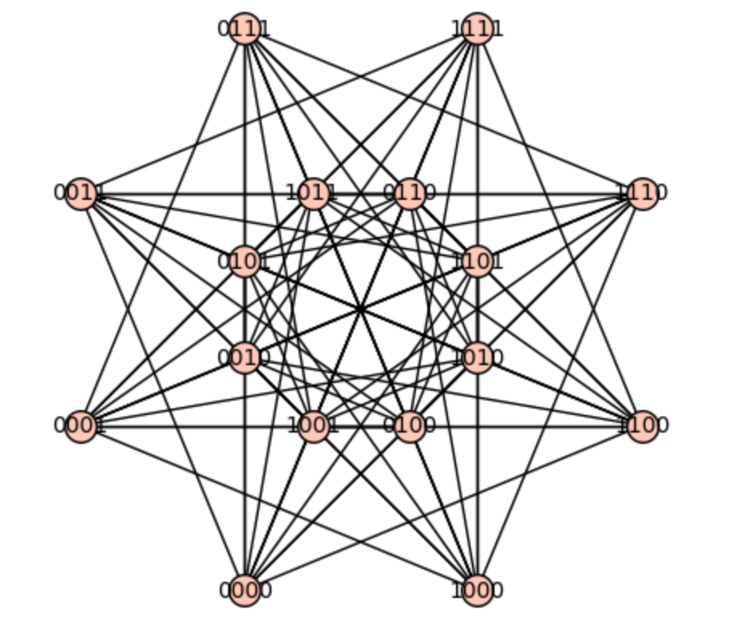

VCU Discrete Mathematics Seminar
Fall 2020

All Seminars Will Take Place on Zoom
Meeting ID: 929 757 99914
Password: A length 10 word formed from the word "graphs" (all lower case) followed by the smallest 4 prime numbers.
[Direct Link to This Week's Seminar]